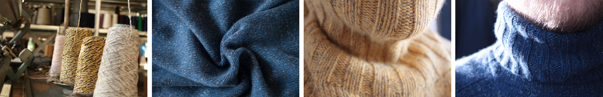
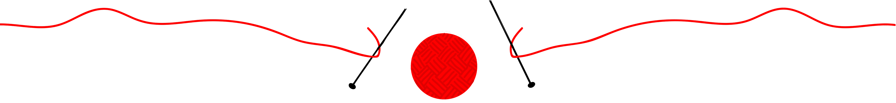
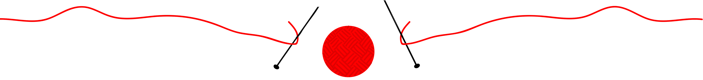

Bag om COLORCLOUDSTUDIO_KNIT
Vi er Tommy Bruun, Brian Sørensen og Hanne. Tommy er arkitekt, Brian er advokat og Hanne strikker vores trøjer. Det var Tommy og Brian der fik idéen efter mange års venskab. Tommy og Brian havde længe snakket om, at lave et projekt sammen, og ud fra dette opstod ColorCloudStudio_knit. Vi går efter at lave en sweater for livet. Den sweater du køber ved os holder i mange år, og vi ønsker derfor at finde din ønskesweater - og det er ikke en proces vi skynder os med. Gode ting tager tid. Vi strikker på maskiner fra 60'ernes Tyskland, hvilket både begrænser, men også åbner en del muligheder.
Bag maskinerne sidder Hanne. Hanne er rigtig dygtig til det hun laver, og har fuldstændigt styr på sine maskiner og forstår at udnytte det potentiale de har. Vi har en vision om, at vi gerne vil have rygtet om os til at gå fra mund til mund. Vi har haft et interview med Rikke fra Børsen. Her fortæller vi lidt om, hvordan vi ønsker at blive større og have små stationer rundt i større byer rundt om i verden. Vi vil gerne være derude, hvor kunderne og pengene er. Vi ser lidt projektet som en øjenåbner for æstetikken og det smukke - det er både højtflyvende og filosofisk, men også lavpraktisk - "det er jo bare en trøje, for fanden".
- Tommy Bruun // medejer af ColorCloudStudio_knit
Med en sweater for livet mener vi det vi siger. Du får en sweater for livet. Vi specialfremstiller en sweater der passer lige netop til dig. Din farve, din størrelse, du bestemmer. Vores sweatre holder i langt over ti år, og vi beholder en spole med lige præcis din kombination af tråd, så hvis der opstår et hul i din trøje kan du straks komme forbi og få det fikset.

Vi går meget op i miljøbevidsthed og at de geder vi får vores uld fra, har det godt. Derfor har vi valgt at have cashmere.org som vores leverandør. Her sigtes dyrevelfærd og miljø meget stort. Vores leverandøre startede op i 1984, og har siden opstart gået ind for at kunder ikke kan snydes med kvalitet, eller velfærd. De går ind for, at kvalitet koster. Dermed er det sagt, at man ikke skal være naiv, og stole på ’’en god deal’’ eller ’’et godt tilbud’’ da dette uld ofte er af dårlig kvalitet.
Vi er glade for vores leverandører, og så længe de vedligeholder deres gode kvalitets produkter, vil vi fortsat bruge dem til vores produktion af kvalitets sweatre. Gederne går på nogle bjerge i Mongoliet, her er vejret meget svingende og vejret kan blive mellem -30 og +30 grader. Dette er også en af grundende til, at du hverken kan svede eller fryse i vores sweatre. Pr. År kan hver ged give 200gram uld, og for at skabe en hel sweater, skal vi bruge 800gram uld. Af denne grund er det også vigtigt for os, at gederne har det godt hele året rundt, for at produktet ikke forværres i løbet af deres levetid. Hvis du vil læse mere om vores ulds oprindelse, kan du finde mere inde på "http://cashmere.org"
 

1
Vi guider dig igennem de forskellige cashmere typer og tager dine mål
2
Kombinér farver - vi tilføjer farver hvis nødvendigt
3
Vi tester dine valg af farver og cashmere typer
4
Beslutningstid - vælg din favorit sweater
5
Vi strikker din skræddersyet sweater